Rediseño del sitio web y la plataforma de OpenPass
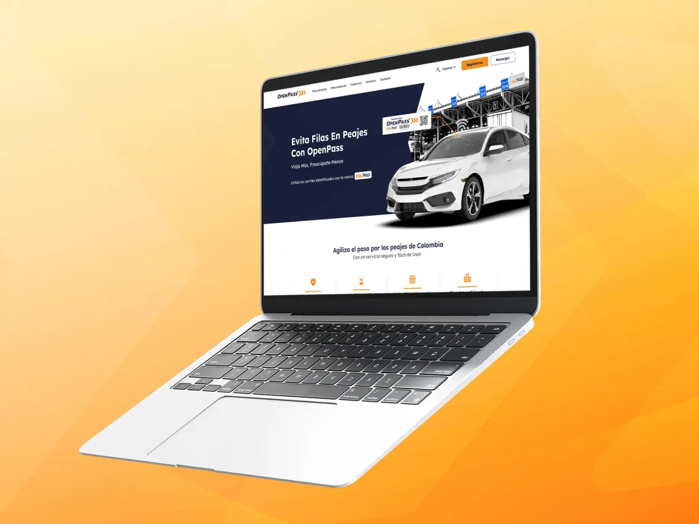
Acerca del Proyecto
OpenPass es una solución de telepeaje que busca agilizar el tránsito en carreteras. El reto principal fue transformar una plataforma técnica y rígida en un ecosistema digital amigable, diferenciando claramente la oferta para usuarios particulares y empresas, mientras se simplificaba el proceso de recarga y administración del TAG.
Mi Rol y Responsabilidades:
UI/UX Designer: Responsable de la interfaz visual, creación de flujos de usuario (userflows) y mapas de sitio.
Objetivos del Diseño:
• Segmentación Clara: Crear experiencias y landing pages independientes para usuarios particulares y corporativos (B2C vs B2B).
• Optimización de Extranet: Rediseñar la plataforma interna para facilitar recargas rápidas y una gestión de cuenta intuitiva.
• Confianza Visual: Proyectar una imagen profesional y tecnológica que brinde seguridad al realizar transacciones financieras.
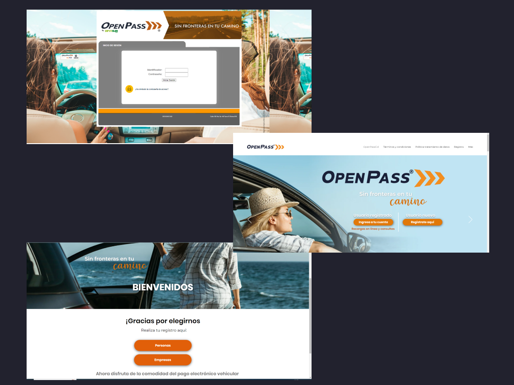
Paso 1: El Punto de Partida (Estado anterior)
Al auditar el sitio original, detecté que la propuesta de valor se perdía en un diseño anticuado. Los usuarios particulares se confundían con opciones corporativas, lo que generaba fricción en el registro y en la gestión del saldo.
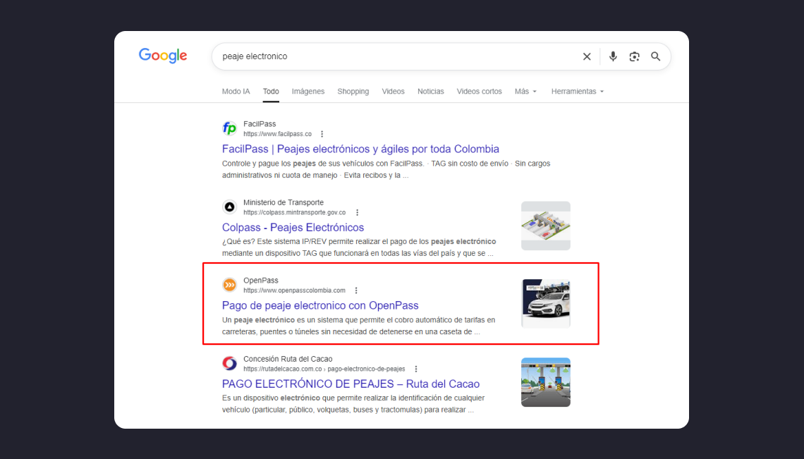
Paso 2: Estrategia de Público y SEO (Keywords)
Antes de diseñar, establecimos una base sólida de contenido. Analicé palabras clave para asegurar que OpenPass fuera una de las primeras opciones cuando alguien buscara "peaje electrónico". Estructuré la jerarquía de encabezados (h1, h2) priorizando términos de búsqueda estratégicos y creando landing pages independientes para cada nicho de mercado.
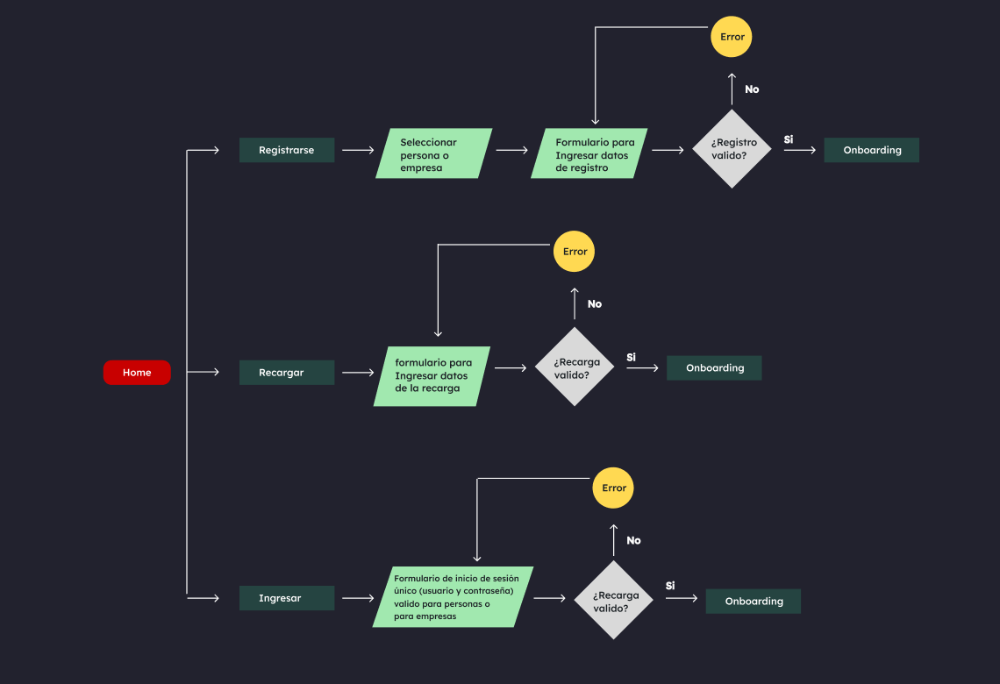
Paso 4: Arquitectura de Información y Flujos
Para reestructurar el ecosistema digital, definí una nueva arquitectura de información mediante un Sitemap que separó claramente las rutas para personas y empresas.
Esta base me permitió desarrollar wireframes iterativos y, posteriormente, un User Flow estratégico que se convirtió en la pieza clave del proyecto; este flujo no solo optimizó la navegación, sino que facilitó que los stakeholders comprendieran visualmente cómo se reconstruía la experiencia de usuario, validando cada punto de contacto desde el registro hasta la recarga del TAG antes de pasar a la fase de alta fidelidad.
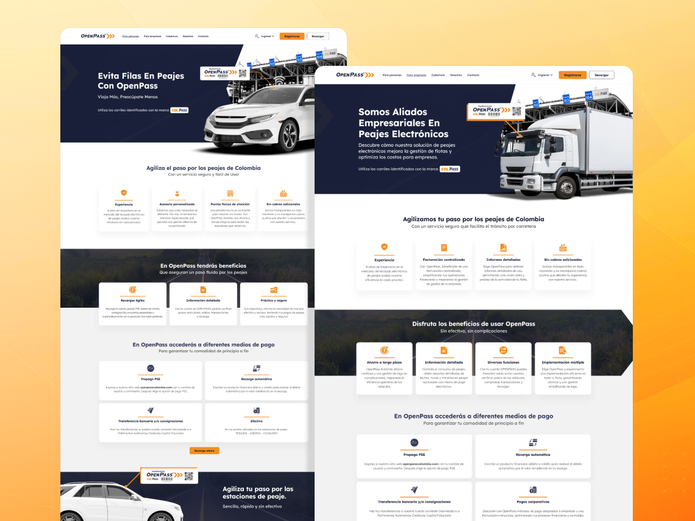
Paso 5: Design System y diseño de Landings por audiencia
Con la estructura validada, creé un Design System bajo la metodología de diseño atómico. Esto me permitió mantener una consistencia visual absoluta y acelerar el proceso de diseño de las dos landing pages.
• Escalabilidad: Definí un sistema de componentes reutilizables (botones, tarjetas, tipografía) que garantiza una transición fluida hacia el desarrollo.
• Identidad por segmento: Personalicé la experiencia mediante el uso estratégico de hero images y copy orientado a beneficios. Esto permite que tanto personas como empresas identifiquen su solución al instante sin romper la arquitectura global.
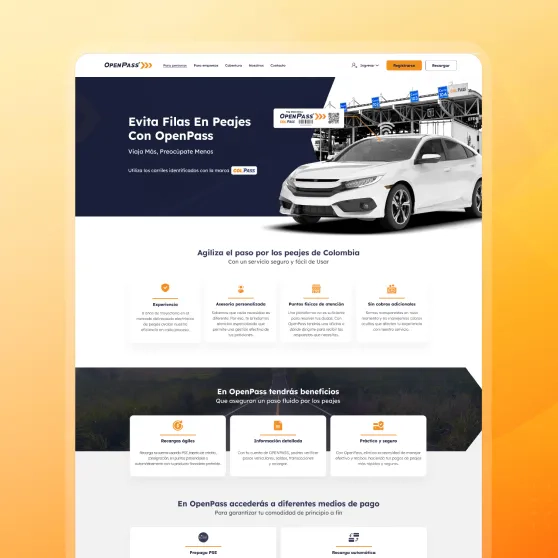
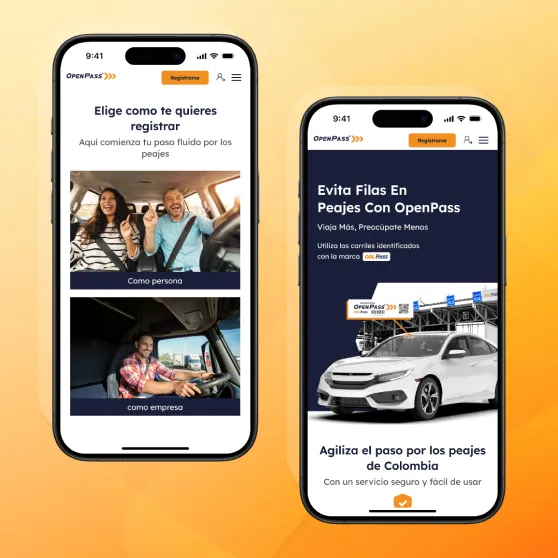
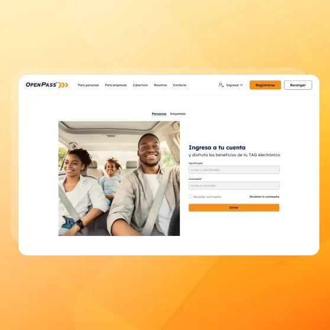
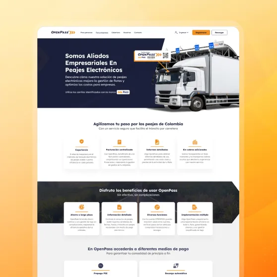
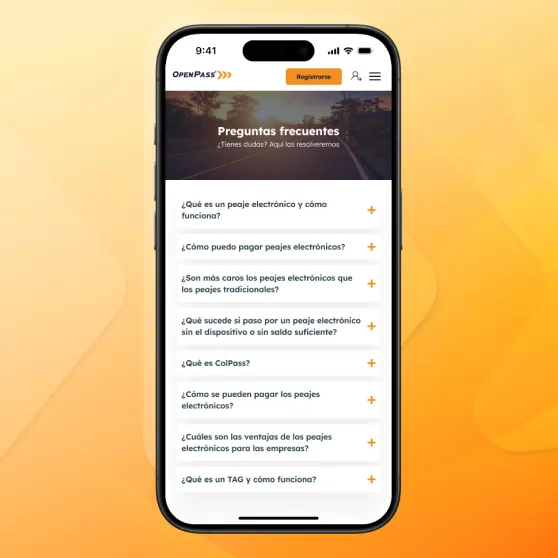
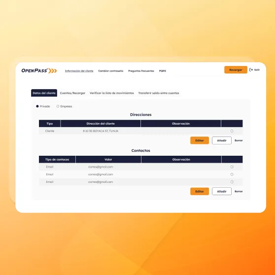
Paso 6: Prototipo de alta fidelidad
El resultado final es un ecosistema digital que transforma la complejidad técnica en una experiencia visualmente limpia y altamente funcional.
• Segmentación estratégica: Consolidé el rediseño mediante la creación de landing pages independientes para personas y empresas. Esto permitió personalizar la propuesta de valor para cada nicho, eliminando ruidos visuales y guiando a cada perfil hacia su embudo de conversión específico.
• Navegación global optimizada: Reestructuré el menú principal para que las acciones principales —Recargar, Ingresar y Registrarse— fueran accesibles. Esta claridad en la navegación global asegura que tanto el usuario nuevo como el recurrente puedan gestionar su TAG con agilidad.
Trabajo realizado para AMD Agencia de Marketing Digital